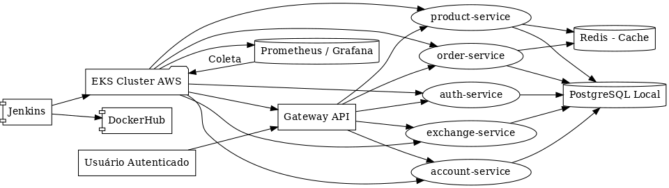
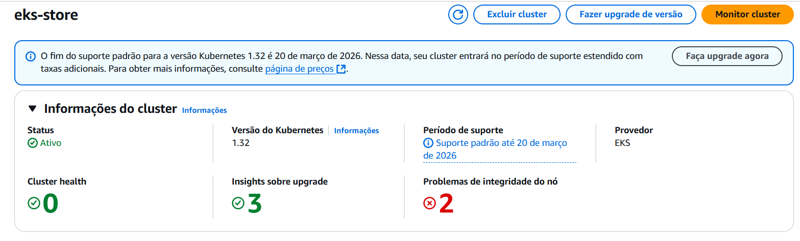
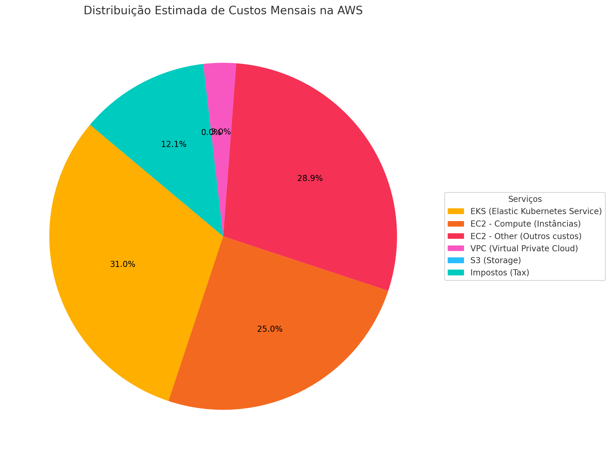

🌐 Projeto Final — Plataforma de Pedidos (Microserviços)
Desenvolvedoras
- Esther Caroline
- Ana Helena Caiafa
Visão Geral
Este projeto consiste no desenvolvimento e implantação de uma plataforma baseada em microsserviços com observabilidade, escalabilidade e automação de entrega contínua, utilizando tecnologias como:
- Spring Boot (Java)
- Docker
- Jenkins
- Kubernetes (AWS EKS)
- Redis (caching)
- Prometheus + Grafana (observabilidade)
Funcionalidades da Aplicação
- Cadastro e autenticação de usuários (Auth, Account)
- Consulta e gerenciamento de produtos (Product)
- Criação e processamento de pedidos (Order)
- API Gateway com roteamento centralizado
- Monitoramento e escalabilidade horizontal (HPA)
Arquitetura da Solução

CI/CD com Jenkins
Integramos o Jenkins ao ciclo de desenvolvimento para garantir entrega contínua:
- Build da aplicação com Maven
- Geração de imagens Docker multiplataforma
- Push automatizado no DockerHub
- Deploy no cluster Kubernetes (EKS)
Kubernetes com EKS
A aplicação foi implantada em um cluster EKS (Elastic Kubernetes Service), com os seguintes recursos para cada microserviço:
DeploymentServiceSecretsConfigMap
📸 Cluster EKS Ativo

☁️ Plataforma como Serviço (PaaS)
Utilizamos PaaS em dois principais pontos:
- EKS: gerenciamento de orquestração dos microsserviços
- Jenkins em Kubernetes: automatização do deploy desacoplado de infraestrutura
Veja o roteiro completo de PaaS
💸 Análise de Custos
Analisamos os custos estimados com base nos serviços utilizados (EKS, EC2, Redis, etc.):
| Serviço | Estimativa Mensal |
|---|---|
| EKS + EC2 + VPC + Redis | ≈ $40,79 |
📸 Gráfico de Custos

Veja a análise de custos completa
Bottlenecks e Soluções
1. Caching com Redis
- Redis foi integrado ao serviço de pedidos para reduzir consultas repetidas ao banco
- Utilizamos
@Cacheablee@CacheEvictcom Spring Cache - Configurado para rodar via container no EKS
2. Observabilidade com Prometheus + Grafana
- Métricas coletadas via Actuator (
/actuator/prometheus) - Prometheus configurado para scrape dos microserviços
- Grafana configurado com painel para visualização de métricas de cada aplicação
Explicação completa em Bottlenecks
Apresentação
Storytelling
Conclusão
O projeto atingiu os principais objetivos:
- Aplicação distribuída, modular e escalável
- CI/CD com deploy automático no Kubernetes
- Monitoramento e otimização de desempenho
- Custo controlado e arquitetura gerenciável